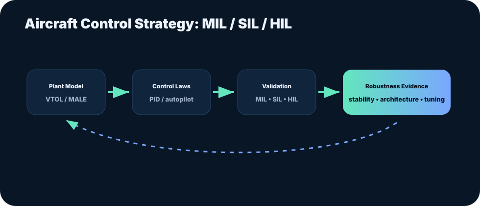

Aircraft Design: Autopilot Control Laws for MALE / VTOL UAVs
Control laws, system architecture, PID tuning, and MIL/SIL/HIL validation for UAV aircraft development.
Executive summary
This professional experience covered autopilot control laws and system architecture for Medium Altitude Long Endurance aircraft and VTOL platforms.
The work included controller design and tuning, robustness testing in MIL/SIL/HIL environments, and contributions to award-winning UAV concepts.
It is the foundation of Kumar Harsh’s aerospace controls and UAV systems identity.

Full document
Use this slot for the full thesis or project report PDF.
Read project report PDFChecking whether the full PDF has been uploaded...
Problem framing
UAV control strategies must be stable, robust, and testable before deployment. Aircraft design work requires balancing control performance, hardware constraints, and validation workflows.
Engineering approach
- Developed autopilot control laws and system architecture for MALE aircraft.
- Designed and tuned PID controllers to improve VTOL and MALE stability characteristics.
- Tested control strategies for robustness in MIL, SIL, and HIL environments.
- Designed a laser-powered automated jig for calibration.
- Contributed to i-VTOL UAV work and invisible UAV prototype concept.
Outcomes and value
- Built strong early-career experience across aircraft control systems and validation.
- Contributed to projects recognized with Star of the Month and Best Team awards.
- Established a systems-thinking foundation for later UAV qualification and certification work.
Details for recruiters and collaborators
Brand relevance
- Connects aircraft design, control theory, and hands-on validation.
- Shows a career arc from aircraft architecture to certification-ready UAV system testing.
Possible public asset
- Add sanitized architecture diagrams or control-loop examples that do not contain proprietary information.
How this fits the Kumar Harsh brand
This case study strengthens the central brand message: engineering reliable autonomous systems requires controls knowledge, test discipline, data interpretation, and documentation that can survive technical review.